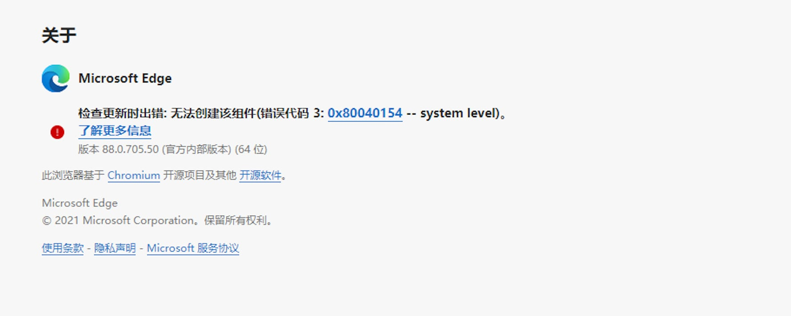
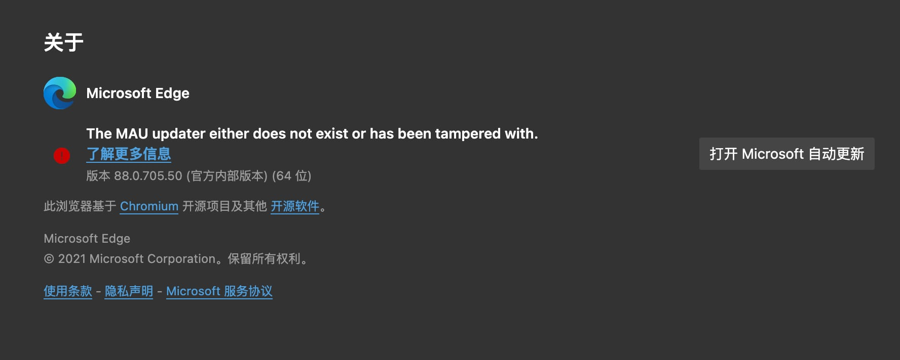

请访问原文链接：如何禁用 Microsoft Edge 自动更新（Windows、macOS），查看最新版。转载请保留出处。
作者：gc(at)sysin.org，主页：www.sysin.org
如何禁用 Mozilla FireFox 自动更新
如何禁用 Microsoft Edge 自动更新
如何禁用 Google Chrome 自动更新
未经用户允许自动更新，也不提供选项禁用自动更新，属实不文明不举，以下方法可以禁用自动更新。
Microsoft Edge for Windows
Microsoft Edge 如何自动更新？
当前以 Edge 88.0 版本为例，新版本将来可能有所变更：
企业版使用以下方法进行自动更新
1
2
3
4
5
6
7
8
9
10
11
12
13
14
| 服务：
Microsoft Edge 更新 服务 (edgeupdate)
Microsoft Edge 更新 服务 (edgeupdatem)
Microsoft Edge Elevation Service (MicrosoftEdgeElevationService)
任务计划：
MicrosoftEdgeUpdateBrowserReplacementTask
MicrosoftEdgeUpdateTaskMachineCore
MicrosoftEdgeUpdateTaskMachineUA
安装路径：
C:\Program Files (x86)\Microsoft\Edge\Application\msedge.exe
更新程序路径：
C:\Program Files (x86)\Microsoft\EdgeUpdate\MicrosoftEdgeUpdate.exe
|
巨硬阿三不讲究，无论 64-bit 还是 32-bit 的 Edge 都安装在 “Program Files (x86”) 目录下面（Chrome 没有这个问题）。
用户版使用以下方法自动更新
1
2
3
4
5
6
7
8
9
10
11
| 任务计划：
MicrosoftEdgeUpdateTaskUser当前用户的SIDCore
MicrosoftEdgeUpdateTaskUser当前用户的SIDUA
例如：
MicrosoftEdgeUpdateTaskUserS-1-5-21-3860493963-3742860931-3732056798-500Core
MicrosoftEdgeUpdateTaskUserS-1-5-21-3860493963-3742860931-3732056798-500UA
用户版安装路径：
C:\Users\用户名\AppData\Local\Microsoft\Edge\Application\msedge.exe
自动更新程序路径：
C:\Users\用户名\AppData\Local\Microsoft\EdgeUpdate\MicrosoftEdgeUpdate.exe
|
使用 PowerShell 禁用更新
1
2
3
4
5
6
7
8
9
10
11
12
13
14
15
16
17
18
19
20
21
22
23
24
25
26
27
28
29
30
31
32
33
34
35
36
37
38
39
40
41
42
43
44
45
46
47
48
49
50
51
52
53
54
55
56
57
58
| if ([Environment]::Is64BitOperatingSystem -eq “True”) {
$PF=${env:ProgramFiles(x86)}
}
else {
$PF=$env:ProgramFiles
}
if ($(Test-Path "$PF\Microsoft\Edge\Application\msedge.exe") -eq "True") {
taskkill /im MicrosoftEdgeUpdate.exe /f
taskkill /im msedge.exe /f
Stop-Service -Name "edgeupdate"
Stop-Service -Name "edgeupdatem"
Stop-Service -Name "MicrosoftEdgeElevationService"
sc.exe delete "edgeupdate"
sc.exe delete "edgeupdatem"
sc.exe delete "MicrosoftEdgeElevationService"
schtasks.exe /Delete /TN \MicrosoftEdgeUpdateBrowserReplacementTask /F
schtasks.exe /Delete /TN \MicrosoftEdgeUpdateTaskMachineCore /F
schtasks.exe /Delete /TN \MicrosoftEdgeUpdateTaskMachineUA /F
Remove-Item "$PF\Microsoft\EdgeUpdate" -Recurse -Force
Write-Output "Disable Microsoft Edge Enterprise Auto Update Successful!"
}
elseif ($(Test-Path "$env:USERPROFILE\AppData\Local\Microsoft\Edge\Application\msedge.exe") -eq "True") {
taskkill /im MicrosoftEdgeUpdate.exe /f
taskkill /im msedge.exe /f
function Get-CurrentUserSID {
[CmdletBinding()]
param(
)
Add-Type -AssemblyName System.DirectoryServices.AccountManagement
return ([System.DirectoryServices.AccountManagement.UserPrincipal]::Current).SID.Value
}
schtasks.exe /Delete /TN \MicrosoftEdgeUpdateTaskUser$(Get-CurrentUserSID)Core /F
schtasks.exe /Delete /TN \MicrosoftEdgeUpdateTaskUser$(Get-CurrentUserSID)UA /F
Remove-Item "$env:USERPROFILE\AppData\Local\Microsoft\EdgeUpdate" -Recurse -Force
Write-Output "Disable Microsoft Edge Users Setup Auto Update Successful!"
}
else {
Write-Output "No Microsoft Edge Installation Detected!"
}
|
效果图：

Microsoft Edge for Mac
在 macOS 中 Edge 使用 Microsoft AutoUpdate app 进行自动更新，只需要取消加载项和移除该 app 的执行权限（或者删除）即可。
1
2
3
4
| launchctl unload /Library/LaunchAgents/com.microsoft.update.agent.plist
sudo chmod -R 644 /Library/Application\ Support/Microsoft/MAU2.0/Microsoft\ AutoUpdate.app
# 或者直接删除更新程序
sudo rm -rf /Library/Application\ Support/Microsoft/MAU2.0/
|
效果图：

资源
Microsoft Edge 策略配置
Microsoft Edge 下载
如果文章中使用的内容和图片侵犯了您的版权，请联系作者删除。如果您喜欢这篇文章或者觉得它对您有用，欢迎您发表评论，也欢迎您分享这个网站，或者赞赏一下作者，谢谢！
 支付宝打赏
支付宝打赏
 微信打赏
微信打赏